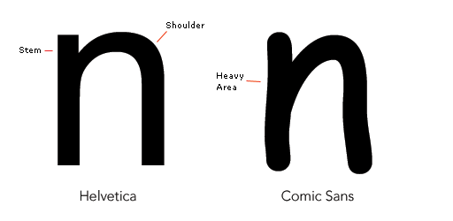

What is comic sans?
Comic Sans MS (or Comic Sans) is a casual script typeface modeled on fonts used in American comic books for several decades. Sans is short for sans-serif. The modern Comic Sans was designed by Vincent Connare and released in 1994 by Microsoft Corporation. It is classified as a casual, non-connecting script, and was designed to imitate the historical look of comic book lettering, for use in informal documents.The typeface has been supplied with Microsoft Windows since the introduction of Windows 95, initially as a supplemental font in the Windows Plus Pack and later in Microsoft Comic Chat. The font's widespread use, often in situations for which it was not intended, has been criticized

Who made this website?
Pugsby Puggerson
A small fur-wolf who does not know what to do with life. he owns a discord server called Pug Server and he cant remember why he made it. but he still knows how to make YouTube videos!
About my accessories
Black Furwolf head: When I was on reddit. I saw the word "Furry". then I wanted to see what one is. THEN I joined the fandom OOPS!
Pug Hat: I like pugs. you can tell by my Name!